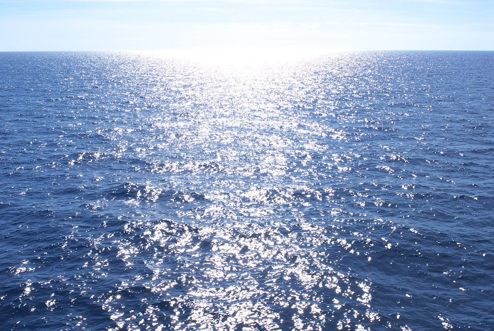

Image 3
JPG: Joint Photographic Experts Group
This second image I chose is a JPG file. It stands for Joint Photographic Experts Group. I've learned that JPG files are easily opened with most operating systems. I chose this image because it reminds me of when I went to visit the Mediterranean Sea. I saw nothing but water!
I've integrated the code from my original lab
to make this sticky Navigation.
My content actually wasn't enough to implement
or the sticky bar navigation as I would like,
so, I am adding this paragraph to my page to show how it works.
I hope you like it!